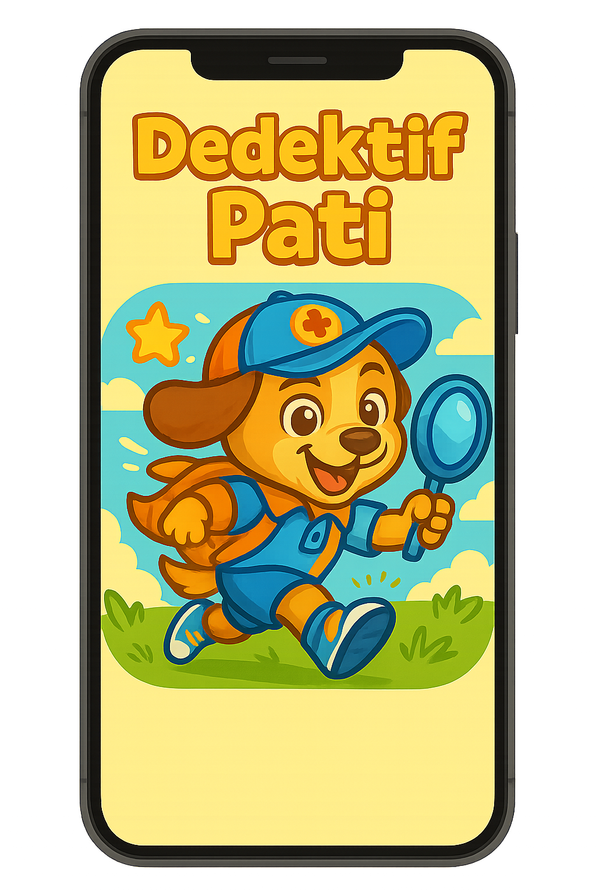

"Dedektif Pati ile Tarihi Keşfet", meraklı çocuklar için tasarlanmış, Artırılmış Gerçeklik (AR) teknolojisiyle tarihi ve kültürü eğlenceli bir maceraya dönüştüren mobil bir oyundur. Sevimli dedektifimiz Pati ile dünyaca ünlü tarihi mekanlarda gizemli kayıp parçaların peşine düş, ipuçlarını topla ve her yapının sırrını keşfederken yepyeni bilgiler öğren.
Dedektif Pati ile Dünyayı Keşfetmeye Hazır Mısın?
Artırılmış Gerçeklikle tarihi yapıları evinde canlandır, eğlenerek öğren!
Hemen İNDİR (APK)Minik Kaşifler İçin Tarih Macerası!
Öğrenmek Hiç Bu Kadar Eğlenceli Olmamıştı!
Eğitici Değer
Tarihi eğlenceyle buluşturur, merak uyandırır.
Çocuk Gelişimine Katkı
Gözlem, problem çözme ve genel kültürü geliştirir.
AR Deneyimi
Teknolojiyi eğitici bir araç olarak kullanır.
Çevrimdışı Oynanabilirlik
Seyahatlerde ve internetsiz ortamlarda ideal.
Maceraya Atılmak Çok Kolay!
1. MEKAN SEÇ!
Keşfetmek istediğin tarihi yapıyı ana menüden seç.
2. YERLEŞTİR!
Telefonunla bir yüzeye dokun ve yapıyı AR ile canlandır.
3. KEŞFET!
Modelin etrafında sanal kontrollerle gezin.
4. BUL!
Dedektif Pati'nin ipuçlarıyla kayıp parçaları bul.
5. ÖĞREN!
Her keşifle yeni tarihi bilgiler ve 'fun fact'ler öğren.
Pati'nin Çantasındaki Harikalar!
- Artırılmış Gerçeklik Deneyimi
- Eğitici ve Eğlenceli İçerik
- Çevrimdışı Oynanabilirlik
- Sevimli Rehber Karakter
- Çocuk Dostu Arayüz
- Giderek Artan Tarihi Mekan Kütüphanesi
Maceraya Katılmaya Ne Dersin?
Dedektif Pati ile Tarihi Keşfet'i hemen indir, eğlence dolu bir öğrenme yolculuğuna çık!
 Hemen İNDİR (Android APK)Kurulum Bilgisi: APK dosyasını yüklemek için telefonunuzun Ayarlar > Güvenlik (veya Uygulamalar) menüsünden "Bilinmeyen kaynaklardan yüklemeye izin ver" seçeneğini etkinleştirmeniz gerekebilir.
Minimum Gereksinimler: Android 7.0 (Nougat) veya üzeri, ARCore desteği.
Dosya Boyutu: 337 MB
Fikirlerin Bizim İçin Değerli!
Oyunumuzla ilgili her türlü soru, öneri ve geri bildirimleriniz için bize yazmaktan çekinmeyin.
merhaba@dedektifpati.com